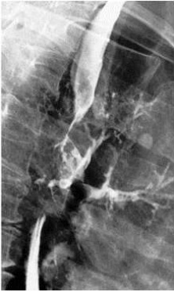
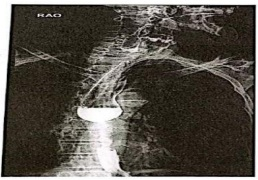
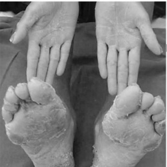
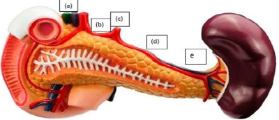
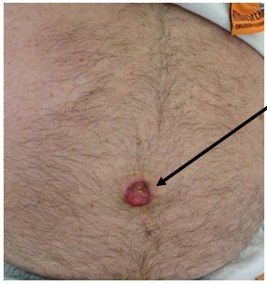
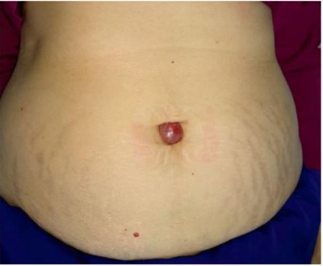

Questão 1 · Tumor Estromal Gastrointestinal GIST · 4000193633Em relação às linfadenectomias, é correto afirmar:
A No câncer gástrico, recomenda-se, na maior parte do mundo, a realização de linfadenectomias a D3, por maiores evidências de aumento de sobrevida global sem maiores morbidades pósoperatórias.
B Nos tumores malignos de reto, deve-se proceder à linfadenectomia correspondente aos linfonodos da arcada dos vasos mesentéricos inferiores desde sua origem, bem como à linfadenectomia pélvica bilateralmente para todos os casos.
C A excisão total do mesorreto corresponde à linfadenectomia prevista para os tumores malignos do sigmoide e cólon esquerdo.
D Nas neoplasias de mama, deve-se proceder às linfadenectomias axilares ipsilaterais, independentemente do resultado da análise do linfonodo sentinela.
E Nos tumores estromais gastrointestinais (GIST) do estômago, por exemplo, não há necessidade de linfadenectomia de rotina.
Questão 2 · Tratamento do Adenocarcinoma Gástrico · 4000190504Paciente de 55 anos, masculino, admitido no PS com quadro de hematêmese, enterorragia e melena. Após estabilização do quadro clínico foi submetido a endoscopia digestiva alta e colonoscopia, evidenciando lesão gástrica ulcerada, sem sangramento ativo no momento do exame, que se localizava na “incisura angulares” se estendendo pela pequena curvatura até o corpo gástrico proximal. Realizada biópsia que evidenciou neoplasia gástrica por adenocarcinoma com células em anel de sinete. Qual a melhor conduta para procedimento cirúrgico:
A Gastrectomia total com anastomose esôfago-jejunal término-terminal.
B Gastrectomia Billrott I com anastomose término terminal.
C Gastrectomia Billrott II com epiplectomia e anastomose pré-colica, “oralis-totalis”.
D Gastrectomia total com esofagectomia e anastomose esôfago-ileal término terminal.
Questão 3 · Tratamento do Adenocarcinoma Gástrico · 4000190365Na realização de uma gastrectomia oncológica a D2, os linfonodos do grupamento número 10 correspondem a:
A tronco celíaco.
B esplâncnicos.
C artéria esplênica.
D pancreáticos.
E hepáticos.
Questão 4 · Principais Lesões Benignas · 4000189072Qual a neoplasia benigna comum do esôfago?
A Lipoma.
B Neurofibroma.
C Papiloma.
D Leiomioma.
Questão 5 · Neoplasias Malignas do Estômago · Tratamento do Adenocarcinoma Gástrico · 4000188802O câncer gástrico precoce pode ser definido como aquela lesão que invade até no máximo a submucosa da parede do estômago (T1b) sem considerar a presença ou ausência de metástase linfonodal. Com relação para a melhor elegibilidade para ressecção endoscópica das lesões de cânceres gástricos precoces, marque, dentre as alternativas abaixo, a mais correta:
A Paciente com lesões polipóides de no máximo 2,0 cm de tamanho, não ulceradas, invadindo no máximo até a mucosa gástrica, com linfonodomegalias perigástricas descartadas por ecoendoscopia.
B Paciente com lesões planas de no máximo 1,0cm de tamanho, não ulceradas, invadindo no máximo até a submucosa gástrica, com linfonodomegalias perigástricas descartadas por ecoendoscopia.
C Paciente com lesões de no máximo 3,0cm de tamanho, não ulceradas, invadindo no máximo até a mucosa gástrica, com linfonodomegalias perigástricas descartada por ecoendoscopia.
D Paciente com lesões ulceradas de no máximo 1,0cm de tamanho, invadindo no máximo até a mucosa gástrica, bem diferenciadas, com linfonodomegalias perigástricas descartada por ecoendoscopia.
E Paciente com lesões polipoides de no máximo 2,0cm de tamanho, não ulceradas, invadindo no máximo até a subserosa gástrica, bem diferenciadas, com linfonodomegalias perigástricas descartadas por ecoendoscopia.
Questão 6 · Neoplasias do Esôf ago · 4000187872Sobre o câncer de esôfago, é INCORRETO afirmar:
A Adenocarcinoma e espinocelular são tipos histológicos frequentes.
B A maioria dos adenocarcinomas ocorre na porção proximal do esôfago.
C Tabagismo tem relação de risco com o desenvolvimento de carcinomas espinocelulares de esôfago.
D Rouquidão pode indicar invasão tumoral do nervo laríngeo recorrente.
Questão 7 · Neoplasias Malignas do Esôf ago · 4000187838Sobre o tratamento do câncer de esôfago, podemos afirmar:
A Ressecção endoscópica é opção para tumores com linfonodos suspeitos.
B Esofagectomia transtorácica e trans-hiatal permitem a mesma extensão de linfadenectomia.
C Neoadjuvância pode ser utilizada em tumores localmente avançados.
D Tumores de 4 cm tem baixo potencial de metástases linfonodais.
Questão 8 · Classif icação Histológica de Lauren · 4000187836Quantos aos subtipos de câncer gástrico na classificação de Lauren é INCORRETO afirmar:
A O tipo difuso de Lauren está associado a fatores ambientais enquanto o intestinal está associado a fatores familiares.
B O tipo difuso de Lauren acomete pacientes mais jovens.
C O tipo difuso de Lauren apresenta células em anel de sinete.
D O tipo intestinal apresenta formação de tecido glandular ao histopatológico.
Questão 9 · Leiomiomas · 4000187807Tumor benigno intramural ou submucoso mais comum do estômago é: (MACHI J, TAKEDA J, KAKEGAWA T. Tumores do Estômago e do Duodeno. In: COELHO J. C. U. Aparelho Digestivo Clínica e Cirurgia. São Paulo: Atheneu, 2005)
A Adenoma
B Lipoma
C Fibroma
D Leiomioma
E Pâncreas ectópico
Questão 10 · Linf omas Gástricos · 4000187717Em relação ao linfoma gástrico tipo MALT é correto afirmar que:
A Cirurgia com gastrectomia total é sempre o tratamento de escolha
B A erradicação do H. pyloripoderá ser o suficiente parao tratamento
C Quimioterapia não tem papel efetivo no seu tratamento
D Esta associado a infecção por Epstein-Barr
E Nenhuma das anteriores
Questão 11 · Classif icação de Borrmann · 4000187715Em relação a classificação de Bormann para tumores gástricos, a Linite Plástica corresponde:
A Tipo I
B Tipo II
C Tipo III
D Tipo IV
E Tipo V
Questão 12 · Fatores de Risco · Tratamento do Adenocarcinoma Gástrico · Adenocarcinoma Gástrico · 4000187039Sobre o câncer gástrico, assinale a opção INCORRETA.
A Síndromes hereditárias de câncer colorretal como a Polipose Adenomatosa Familiar e a síndrome de Lynch são fatores de risco para câncer gástrico.
B Baixo consumo de frutas e verduras, resultando em dieta pobre em fibra, é um fator de risco para câncer gástrico.
C A laparoscopia tem alta taxa de sensibilidade para detectar metástases ocultas e portanto é útil no estadiamento.
D A ressecção endoscópica é possível em casos selecionados: tumores pequenos, limitados à mucosa e com fatores de risco favoráveis.
E Um maior número de linfonodos ressecados têm trazido melhor prognóstico, com isso, a ressecção linfonodal extensa (D3) tem sido indicada.
Questão 13 · Estadiamento · Adenocarcinoma de Esôf ago · 4000186849Paciente de 71 anos em investigação de disfagia e perda ponderal é submetido a endoscopia digestiva alta que evidencia lesão ulcerada em esôfago distal, distando 3 centímetros da cárdia. O exame histopatológico revela adenocarcinoma infiltrativo. Pela classificação de Siewert, este paciente é classificado em tipo:
A II
B I
C III
D IV
Questão 14 · Diagnóstico · Apresentação Clínica · 4000186234Paciente de 45 anos, portador de adenocarcinoma gástrico, foi submetido a uma gastrectomia total. Estadiamento patológico pT3NxM0. Qual tratamento adjuvante é mais adequado?
A Reoperar o paciente
B Tratamento paliativo
C Quimioterapia exclusiva
D Quimioterapia e radioterapia
Questão 15 · Adenocarcinoma Gástrico · Apresentação Clínica · 4000185335Homem, 65 anos de idade, é levado ao Ambulatório de Cirurgia Geral com história de dor em epigástrio, de moderada intensidade, com piora à alimentação há dois meses. O paciente refere, também, hiporexia, alguns episódios de náuseas e vômitos e perda de peso (não mensurada) neste mesmo período. Relata tabagismo 30 cigarros/dia e etilismo social há 30 anos. Ao exame físico, regular estado geral, descorado +2/+4, ictérico +1/+4, FC: 72bpm, PA: 110x74mmHg; ausculta cardíaca e respiratória sem alterações; abdome um pouco distendido; ruídos hidroaéreos presentes, ácido; dor à palpação profunda de epigástrio, sem sinais de irritação peritoneal; palpado nódulo em região umbilical, medindo cerca de 1,0cm. Os exames laboratoriais iniciais apresentaram Hb: 10g/dL, Ht: 32%, Leucócitos totais: 9500células/mm³, Ureia: 35mg/dL, Creatinina: 1,0mg/dL, Na: 142mEq/L, K:4,0mEq/L, Bilirrubinas totais 3,5mg/dL (direta: 2,5mg/dL e indireta: 1,0mg/dL). Diante do caso clínico e dos exames complementares, indique a principal suspeita diagnóstica que justifique o quadro clínico do paciente:
A Hepatite crônica alcoólica.
B Pancreatite crônica alcoólica.
C Linfoma não-Hodgkin.
D Câncer gástrico.
Questão 16 · Diagnóstico · 4000185334Homem, 65 anos de idade, é levado ao Ambulatório de Cirurgia Geral com história de dor em epigástrio, de moderada intensidade, com piora à alimentação há dois meses. O paciente refere, também, hiporexia, alguns episódios de náuseas e vômitos e perda de peso (não mensurada) neste mesmo período. Relata tabagismo 30 cigarros/dia e etilismo social há 30 anos. Ao exame físico, regular estado geral, descorado +2/+4, ictérico +1/+4, FC: 72bpm, PA: 110x74mmHg; ausculta cardíaca e respiratória sem alterações; abdome um pouco distendido; ruídos hidroaéreos presentes, ácido; dor à palpação profunda de epigástrio, sem sinais de irritação peritoneal; palpado nódulo em região umbilical, medindo cerca de 1,0cm. Os exames laboratoriais iniciais apresentaram Hb: 10g/dL, Ht: 32%, Leucócitos totais: 9500células/mm³, Ureia: 35mg/dL, Creatinina: 1,0mg/dL, Na: 142mEq/L, K:4,0mEq/L, Bilirrubinas totais 3,5mg/dL (direta: 2,5mg/dL e indireta: 1,0mg/dL). Com base no quadro, indique o exame complementar mais adequado para a confirmação do diagnóstico:
A Punção por agulha grossa do fígado guiada por ultrassonografia.
B Tomografia computadorizada do abdome.
C Endoscopia digestiva alta.
D Videolaparoscopia diagnóstica.
Questão 17 · Apresentação Clínica · 4000185333Homem, 65 anos de idade, é levado ao Ambulatório de Cirurgia Geral com história de dor em epigástrio, de moderada intensidade, com piora à alimentação há dois meses. O paciente refere, também, hiporexia, alguns episódios de náuseas e vômitos e perda de peso (não mensurada) neste mesmo período. Relata tabagismo 30 cigarros/dia e etilismo social há 30 anos. Ao exame físico, regular estado geral, descorado +2/+4, ictérico +1/+4, FC: 72bpm, PA: 110x74mmHg; ausculta cardíaca e respiratória sem alterações; abdome um pouco distendido; ruídos hidroaéreos presentes, ácido; dor à palpação profunda de epigástrio, sem sinais de irritação peritoneal; palpado nódulo em região umbilical, medindo cerca de 1,0cm. Os exames laboratoriais iniciais apresentaram Hb: 10g/dL, Ht: 32%, Leucócitos totais: 9500células/mm³, Ureia: 35mg/dL, Creatinina: 1,0mg/dL, Na: 142mEq/L, K:4,0mEq/L, Bilirrubinas totais 3,5mg/dL (direta: 2,5mg/dL e indireta: 1,0mg/dL). Identifique, entre os achados da história clínica e do exame físico do paciente, o fator de pior prognóstico:
A Anemia.
B Nódulo palpável em região umbilical.
C Icterícia.
D Perda de peso.
Questão 18 · Tumor Estromal Gastrointestinal GIST · 4000184668Paciente de 40 anos apresenta diagnóstico de Gastrointestinal Stromal Tumor (GIST), que é um tipo de tumor mesenquimal do trato gastrointestinal. Sobre o GIST, é CORRETO afirmar que:
A O tumor deriva das células de cajal, presentes no plexo mioentérico.
B Possui disseminação linfonodal com metástase mais comumente para o pulmão.
C O diagnóstico desse tumor é histológico baseado na hematoxilina/eosina e que deve ser positivo para expressão da proteína c-KIT.
D Acomete mais comumente o estomago, seguido do cólon e reto.
Questão 19 · Neoplasias Malignas do Esôf ago · Adenocarcinoma de Esôf ago · 4000184510As lesões tumorais da transição esofagogástrica são mais comumente
A tumores epidermoides.
B tumores adenoescamosos.
C tumores adenocísticos.
D adenocarcinomas.
E tumores estromais gastrointestinais (GISTs, na sigla em inglês).
Questão 20 · Neoplasias Malignas do Esôf ago · Cirurgia · 4000184504A técnica de esofagectomia com reconstrução de trânsito com anastomose gastroesofágica intratorácica denomina-se
A Ivor Lewis.
B Braun.
C Marischino.
D Billroth.
E Meyers.
Questão 21 · Estadiamento · Carcinoma de Células Escamosas CEC · 4000183915Tratamento do Câncer do Esôf ago e da Transição Esof agoGástrica Paciente de 70 anos, tabagista, com passado de etilismo, apresenta disfagia progressiva há 6 meses acompanhada de perda de 15% do peso corporal. Procura o médico na Unidade Básica de saúde, que solicita endoscopia digestiva alta, a qual demonstra lesão vegetante a 25 cm da arcada dentária superior, ocupando 70% da luz esofágica que foi biopsiada. A biópsia apresenta como resultado carcinoma de células escamosas do esôfago. Sabendo que, durante o estadiamento, não houve evidência de comprometimento linfonodal, metástases e nem invasão de órgão adjacentes, (T3N0M0), a conduta mais adequada é
A esofagectomia seguida de tratamento adjuvante.
B esofagectomia radical em três campos.
C quimioterapia + radioterapia exclusiva.
D quimioterapia + radioterapia neoadjuvante.
Questão 22 · Classif icação de Borrmann · 4000183700A classificação de Borrmann para câncer gástrico IV equivale ao câncer
A do fundo gástrico.
B ulceroinfiltrativo.
C do antro gástrico.
D protuso.
E infiltrativo difuso.
Questão 23 · Carcinoma de Células Escamosas CEC · Neoplasias Malignas do Esôf ago · Adenocarcinoma de Esôf ago · 4000183425O gráfico abaixo demonstra a tendência de incidência dos principais tipos de tumores esofágicos entre 1975 e 2001. Analise-o com atenção. Sobre ele, assinale a alternativa CORRETA.

A A linha A corresponde a tumores que acometem mais brancos que negros.
B Os tumores da linha B podem ser classificados como tipo I de Siewert
C Os tumores da linha C são os de pior prognóstico.
D O HPV é um fator de risco para os tumores da linha B.
E Os tumores da linha A são mais comuns em mulheres.
Questão 24 · Métodos Complementares · 4000183421O paciente da questão anterior realizou a TC de abdome abaixo. Nela podemos constatar que

A existe uma metástase hepática no caudado.
B a lesão se localiza no fundo gástrico.
C há linfadenomegalia na curvatura menor.
D a lesão invade o lobo esquerdo hepático.
E se identifica ascite.
Questão 25 · Diagnóstico · Obstrução · Apresentação Clínica · 4000183262Um homem de setenta anos de idade, com antecedentes de hipertensão arterial sistêmica e tabagismo, foi atendido no pronto-socorro devido a vômitos incoercíveis iniciados havia um dia. Encontrava-se em mau estado geral, desidratado, co m frequência cardíaca de 120 bpm e com pressão arterial de 80 mmHg x 60 mmHg. Seu abdome estava ácido e indolor, com distensão do epigastro. Foi passada uma sonda nasogástrica com débito inicial de 1.500 mL. Com base nesse caso hipotético, assinale a alternativa que apresenta o melhor exame para a determinação do diagnóstico etiológico desse paciente, após estabilização inicial.
A endoscopia digestiva alta
B exame contrastado de esôfago, estômago e duodeno
C tomografia computadorizada de abdome
D radiografia simples de abdome
E ultrassonografia de abdome
Questão 26 · Manif estações Clínicas · Apresentação Clínica · Tratamento · 4000183067Paciente do sexo feminino, 62 anos, tabagista, hipertensa e diabética, com queixa de sintomas dispépticos há cerca de 6 meses. Em atendimento médico prévio, foi prescrito Omeprazol 40mg diário, o qual fez uso por 4 meses, sem resposta satisfatória da sua sintomatologia, evoluindo com anorexia. Evolui com emagrecimento de cerca de 5kg no período. Nega febre, uso crônico de anti-inflamatórios não hormonais e história familiar de neoplasias do trato gastrointestinal. Você solicita endoscopia digestiva alta e esta evidencia lesão plana, com ulceração rasa e bordas elevadas, de cerca de 2cm, em incisura angularis. Qual das conclusões a seguir sobre o caso descrito é falsa?
A Os dados fornecidos não nos permitem diferenciar com segurança diagnósticos como úlcera benigna, neoplasia gástrica precoce ou neoplasia gástrica avançada.
B A observação de anorexia e perda de peso, associada ao fato de ulceração gástrica persistente a despeito do tratamento com inibidor de bomba de prótons pode sugerir etiologia maligna para a lesão descrita.
C A cromoscopia com uso de corantes, a ecoendoscopia e a injeção de solução salina na camada submucosa abaixo da lesão podem fornecer dados referentes a possível ressecabilidade endoscópica da lesão.
D Uma vez que a endoscopia não evidenciou lesão tipo Borrmann IV, a conduta mais segura é o tratamento empírico para Helicobacter pylori, a troca do omeprazol pelo esomeprazol e a repetição da endoscopia após 4 meses.
Questão 27 · Neoplasias Benignas do Estômago · Pólipos de Glândulas Fúndicas · Pólipos Adenomatosos · 4000182718Em relação ao achado de pólipos gástricos em endoscopia digestiva alta realizada para avaliação de queixas dispépticas, é CORRETO afirmar que:
A Os pólipos adenomatosos carregam consigo o risco de transformação maligna, uma vez que se enquadram na sequência adenoma-carcinoma, comportando-se de forma semelhante aos pólipos colônicos.
B Os pólipos de glândulas fúndicas estão relacionados com o uso crônico de bloqueadores de bomba de próton, sendo a manifestação pré-maligna associada ao uso dessas medicações.
C Pólipos hiperplásicos de estômago estão relacionados à infecção pelo
D A ressecção endoscópica é a terapia padrão para pólipos sésseis maiores de 2cm ou com foco de carcinoma invasivo.
Questão 28 · Classif icação Histológica de Lauren · 4000182599O sistema de classificação proposto por Lauren em 1965 separa os adenocarcinomas gástricos em tipos intestinal ou difuso com base em sua histologia. É uma característica do tipo
A disseminação hematogênica.
B células em anel de sinete.
C associação com atrofia gástrica e metaplasia intestinal.
D maior incidência em homens idosos.
E instabilidade de microssatélites (mutações do gene APC).
Questão 29 · Fatores de Risco · Epidemiologia · 4000182598Assinale a alternativa que apresenta um fator de risco para o desenvolvimento do câncer de estômago (adenocarcinoma).
A Baixo consumo de gorduras ou de proteínas.
B Alto nível socioeconômico.
C Presença de pólipos de glândulas fúndicas.
D Baixo consumo definitratos.
E Sexo feminino.
Questão 30 · Tratamento do Adenocarcinoma Gástrico · 4000181873Para um paciente com adenocarcinoma gástrico de 3cm localizado em antro gástrico, com comprometimento linfonodal de tronco celíaco e sem metástases hepática, a melhor técnica cirúrgica e a reconstrução deverão ser:
A Gastrectomia subtotal com linfadenectomia a D2 + Y de Roux.
B Gastrectomia total com linfadenctomia a D1 + Billroth I.
C Gastrectomia parcial com linfadenectomia a D2 + Billroth II.
D Gastrectomia subtotal com linfadenectomia a D2 + Billroth I.
E Gastrectomia total com linfadenectomia a D1 + Y de Roux.
Questão 31 · Linf omas Gástricos · 4000181829O linfoma do tipo MALT gástrico apresenta-se normalmente como uma doença indolente e multifocal com sintomas inespecíficos do trato digestivo. Qual seria a melhor opção relacionada ao tratamento da patologia em questão?
A O único tratamento curativo possível do linfoma MALT é a gastrectomia total associado a quimioterapia.
B Os Sintomas B (febre, calafrios e perda de peso) são de aparecimento precoce e relacionam-se a menor resposta ao tratamento do linfoma MALT.
C A erradicação do H. pylori pode regredir a neoplasia nos estágios iniciais.
D A infecção por H. pylori acomete cerca de 50% dos casos e o tratamento do H. pylori não possui impacto no tratamento do linfoma MALT.
Questão 32 · Fatores de Risco · 4000181751Senhora de 47 anos de idade, tabagista, obesa e etilista social, é atendida no ambulatório por dispepsia há vários anos. Já fez tratamento para erradicação de mas agora queixa-se de perda ponderal significativa no último mês. O fator de risco a que este tumor está mais comumente relacionado é
A etilismo.
B infecção por
C obesidade.
D tabagismo.
Questão 33 · Sintomas e Investigação Diagnóstica · 4000181533Paciente feminina, 51 anos, queixa-se de disfagia para alimentos sólidos, com cerca de 2 meses de evolução. Refere emagrecimento de cerca de 8% do peso corporal neste período. Realizou endoscopia digestiva alta que demonstrou lesão elevada de aspecto vegetante, envolvendo 50% da circunferência, há 25 cm da arcada dentária superior. Foram coletados fragmentos para análise anatomopatológica. Em relação a este caso clínico, analise as assertivas abaixo classificando-as em verdadeiro (V) ou falso (F). A localização da lesão, no terço médio do esôfago, leva a pensar na hipótese de adenocarcinoma de esôfago. O estadiamento desta lesão pode ser realizado com tomogra a computadorizada de tórax e abdome e ultrassom endoscópico. História crônica de tabagismo ou etilismo levam a pensar que esta lesão provavelmente é um adenocarcinoma esofágico. Con rmado o diagnóstico de neoplasia, a ablação por radiofrequência é o tratamento de escolha por possuir menor invasividade. A disfagia ocorre tardiamente na evolução do câncer de esôfago, ocorrendo quando há cerca de 50% da luz acometida.
A V – F – V – V – F.
B F – V – F – V – V.
C V – F – V – V – V.
D V – V – V – F – V.
E F – V – F – F – V.
Questão 34 · Métodos Complementares · 4000181349No ambulatório de cirurgia oncológica, uma paciente de 54 anos com história de perda de peso recente, traz uma endoscopia com achados de lesão gástrica de 1 cm ulcerada. O exame histopatológico da biópsia endoscópica é compatível com adenocarcinoma moderadamente diferenciado. Qual exame complementar para estadiamento é mais acurado para detectar progressão locorregional da neoplasia?
A Tomografia por emissão de prótons (PET - CT).
B Tomografia abdominal com contraste.
C Laparoscopia diagnóstica.
D US endoscópico.
Questão 35 · Adenocarcinoma de Esôf ago · 4000181335A incidência de adenocarcinoma esofágico vem aumentando nas últimas 4 décadas em vários países, como Estados Unidos. Qual a principal explicação para esse fato?
A Aumento da incidência de obesidade.
B Aumento no consumo de cigarro e álcool.
C Aumento da qualidade de notificação dos casos.
D Aumento do consumo de café e bebidas quentes.
Questão 36 · Tumor Estromal Gastrointestinal GIST · 4000181240Em relação ao GIST gástrico, é correto afirmar que
A são tumores oriundos das células de Cajal localizadas na camada mucosa do trato gastrointestinal.
B a obtenção de margens cirúrgicas amplas mostra significativa melhora na taxa de sobrevida global dos pacientes.
C a alteração no gene KIT é rara nos GIST.
D a maioria dos tumores GIST apresentam envolvimento sindrômico, principalmente com a doença de von-Hippel- Lindau.
E no tratamento, a linfadenectomia não se faz obrigatória dada a raridade no envolvimento dos linfonodos.
Questão 37 · Leiomiomas · Tumor Estromal Gastrointestinal GIST · Lipomas · 4000181239Uma mulher de 30 anos realizou endoscopia digestiva alta devido à dor epigástrica há 3 semanas e perda do apetite. Segue o laudo do procedimento: Introdução do gastroscópio sem di culdades pelo músculo cricofaríngeo. Mucosa esofágica sem alterações em todo seu trajeto. gástrica sem resíduos alimentares e pregueado mucoso preservado. Na grande curvatura do corpo gástrico distal, observa-se lesão elevada de 2,5 cm, arredondada, recoberta por mucosa normal (aspecto submucoso), endurecida ao toque e pouco móvel. Biópsias endoscópicas foram realizadas. Mucosa do antro sem alterações. Piloro prévio e centrado. Bulbo duodenal sem deformidades. Mucosa bulbar sem alterações. Segunda porção duodenal de fácil acesso e sem alterações endoscópicas. O exame anatomopatológico realizado nos fragmentos obtidos através das biópsias endoscópicas revelou tratar-se de mucosa com aspecto histológico normal. Diante do laudo apresentado, qual é a conduta adequada?
A Iniciar inibidor de bomba de próton (IBP) por 60 dias e, se melhora dos sintomas, suspender medicação.
B Repetir biópsia endoscópica.
C Solicitar ecoendoscopia alta com punção da lesão gástrica.
D Solicitar tomografia computadorizada para melhor avaliação de lesão gástrica.
E Gastrectomia total laparoscópica.
Questão 38 · Diagnóstico · Estadiamento · 4000181234Um homem de 82 anos, nascido e residente nos Estados Unidos, está no Brasil há 1 ano. Vem ao ambulatório acompanhado pelo lho com história de disfagia progressiva há 6 meses, dor retroesternal e perda de peso acentuada. Refere hipertensão arterial leve, sem outras comorbidades. Traz endoscopia digestiva alta realizada há 1 semana. Segue foto de lesão identificada na junção esofagogástrica (cárdia). Diante da história clínica e do achado endoscópico, qual é a hipótese diagnóstica, a classificação a ser utilizada e a conduta?

A Papilomatose / Classificação de Kodsi / Ressecção endoscópica.
B Adenocarcinoma / Classificação de Kudo / Ressecção endoscópica.
C Adenocarcinoma / Classificação de Siewert / Estadiamento da doença.
D Carcinoma espinocelular (CEC) / Classificação de Kudo / Estadiamento da doença.
E Carcinoma espinocelular (CEC) / Classificação de Siewert / Ablação com plasma de argônio e gastrostomia endoscópica.
Questão 39 · Neoplasias Malignas do Estômago · 4000192969O câncer gástrico difuso hereditário é considerado uma síndrome hereditária autossômica dominante relacionada à mutação do gene
A K-ras.
B P 53.
C CDH1.
D BRCA3.
E APC.
Questão 40 · Adenocarcinoma de Esôf ago · 4000191860Homem, 59 anos de idade, evoluiu com disfagia progressiva há 3 meses e perda de 5 kg no período. Foi submetido a endoscopia digestiva alta que evidenciou lesão ulcerada no esôfago distal, ocupando 70% da luz do órgão. A biópsia revelou tratar-se de adenocarcinoma. Qual é o principal fator de risco para este tipo de tumor?
A Acalásia avançada.
B Tagabismo.
C Doença do refluxo gastroesofágico.
D Ingestão de bebida quente.
E Infecção por
Questão 41 · Tumor Estromal Gastrointestinal GIST · 4000191824Paciente 55 anos de idade, apresentava queixas inespecí cas de dor epigástrica de longa data e procurou uma USF onde foi encaminhado para realizar um exame endoscópico Foi visualizado, em antro gástrico, lesão subepitelial de 2,5 cm. Como seguimento do caso foi encaminhado para Ecoendoscopia que veri cou lesão de 2,5 cm, situada na camada muscular própria do estômago, bem delimitada. Na ocasião foi realizada Biópsia da lesão cuja resultado da Imuno Histoquímica foi positiva para CD117, CD34 e DOG1. Diante do achado o diagnóstico é:
A Adenocarcinoma pouco diferenciado, com células em anel de sinete.
B Linfoma gástrico
C GIST - Tumor estromal gastrintestinal
D Tumor Neuroendócrino tipo II
Revisar: possível letra faltando em enunciado
Questão 42 · Neoplasias Malignas do Estômago · 4000191546A mutação do gene CDH1 é responsável pela presença de câncer hereditário no seguinte órgão:
A adrenal.
B esôfago.
C pâncreas.
D estômago.
Questão 43 · Anatomia Vascular do Trato Gastrointestinal · Tratamento do Adenocarcinoma Gástrico · 4000191160Para o tratamento cirúrgico do câncer gástrico, comumente é realizado a linfadenectomia D2; dentre as estruturas dissecadas, inclui-se o tronco celíaco, ramo direto da aorta abdominal. Quais os ramos vasculares que geralmente compõe esta estrutura?
A Artéria mesentérica superior, artéria esplênica, artéria hepática própria.
B Artéria gástrica direita, artéria hepática própria, artéria gastroduodenal.
C Artéria gástrica esquerda, artéria hepática comum, artéria esplênica.
D Artéria hepática direita, artéria gástrica esquerda, artéria esplênica.
E Artéria mesentérica inferior, artéria gástrica esquerda, artéria comum.
Questão 44 · Pólipos de Glândulas Fúndicas · 4000191070Com relação aos pólipos gástricos, assinale a alternativa correta.
A Os pólipos adenomatosos não apresentam alto risco para o desenvolvimento de malignidade.
B O risco para o desenvolvimento de carcinoma é de, aproximadamente, 80% a 90%.
C Os pólipos das glândulas fúndicas são geralmente benignos, e estão fortemente associados ao uso de inibidores de bomba de próton.
D A ressecção cirúrgica é indicada quando o pólipo for maior que 1 cm, mesmo sem apresentar foco com- provado de carcinoma invasivo.
E As lesões pedunculadas devem ser abordadas preferencialmente por gastrectomia parcial.
Questão 45 · Neoplasias Benignas do Esôf ago · Neoplasias Malignas do Esôf ago · 4000190924Com relação aos tumores benignos do esôfago, assinale a alternativa correta.
A Os tumores benignos da submucosa incluem lipomas, hemangiomas e tumores neurais.
B Os papilomas escamosos ocorrem com mais regularidade no esôfago proximal.
C Os tumores benignos da camada muscular incluem tumores de células granulares e pólipos fibrovasculares.
D Os pólipos fibrovasculares são encontrados frequentemente no esôfago distal e não causam obstrução da via aérea.
E Os tumores benignos do esôfago são mais comuns que o câncer do esôfago na população geral.
Questão 46 · Carcinoma de Células Escamosas CEC · Adenocarcinoma de Esôf ago · 4000175864Em relação ao câncer do esôfago assinale a alternativa CORRETA:
A o carcinoma de células escamosas é mais comum no esôfago distal e o adenocarcinoma é mais comum no esôfago médio e proximal;
B o adenocarcinoma é mais comum no esôfago distal e médio e o carcinoma de células escamosas é mais comum no esôfago proximal;
C o carcinoma de células escamosas é mais comum no esôfago distal e médio e o adenocarcinoma é mais comum no esôfago proximal;
D adenocarcinoma é mais comum no esôfago distal e o carcinoma de células escamosas é mais comum no esôfago médio e proximal;
E o adenocarcinoma e o carcinoma de células escamosas são encontrados de forma semelhante em todo o esôfago.
Questão 47 · Tumor Estromal Gastrointestinal GIST · 4000175706Mulher, 51 anos, foi submetida a gastrectomia parcial com ressecção completa de GIST de 6 cm, com índice mitótico de 14/50 campo de alta potência, presença de mutação c-Kit positiva e sem metástase no estadiamento. A conduta, nesse caso, é:
A realizar quimioterapia adjuvante.
B realizar quimioterapia e radioterapia adjuvante.
C totalizar gastrectomia.
D só acompanhamento clínico com exames de estadiamento a cada 6 meses.
E realizar terapia alvo adjuvante com inibidor da tirosina quinase.
Questão 48 · Sintomas e Investigação Diagnóstica · Carcinoma de Células Escamosas CEC · 4000173547Métodos Complementares Homem, 66 anos. Admitido com disfagia e tosse há 3 meses. Perda de 13 kg. Traz o esofagograma abaixo: Sobre as possibilidades terapêuticas, assinale a adequada.

A Pode ser cirúrgico após quimio e radioterapia (CROSS).
B Não ressecável. Realizar by-pass gástrico retroesternal.
C Pode ser cirúrgico após radio e braquiterapia,
D Cirúrgico. Imunonutrição pré-operatória por jejunostomia.
E Não ressecável. Passar endoprótese endoscópica.
Questão 49 · Adenocarcinoma Gástrico · Cirurgia · 4000173544Paciente, 62 anos, sexo feminino, tabagista e etilista, realizou endoscopia digestiva alta devido à queixa de dispepsia. Na endoscopia, foi evidenciada uma lesão polipoide medindo 2cm em antro. Essa lesão foi ressecada por completo e enviada para histopatológico, que evidenciou adenocarcinoma gástrico bem diferenciado com invasão apenas da mucosa, sem ulceração. Realizou estadiamento adequado sem sinais de neoplasia em linfonodos ou a distância. Sobre o caso em questão, assinale a alternativa CORRETA.
A O tratamento da paciente já foi feito, devendo apenas ser realizado acompanhamento para observação de sinais de recorrência.
B A paciente deverá ser submetida à gastrectomia total e quimioterapia.
C A paciente deverá ser submetida à gastrectomia subtotal com linfadenectomia para, então, definir ou não a necessidade de quimioterapia.
D Além da ressecção endoscópica, a paciente deverá passar por tratamento radioterápico.
E Além da ressecção endoscópica, a paciente deverá passar por quimioterapia.
Questão 50 · Classif icação Histológica de Lauren · Apresentação Clínica · 4000169779O câncer gástrico apresenta diferenças geográ cas, étnicas e socioeconômicas significativas na distribuição. Existem duas variantes histológicas principais de adenocarcinoma gástrico: o tipo intestinal, mais frequente, e o tipo difuso, menos comum. A respeito do câncer gástrico, analise as afirmativas. I- O câncer gástrico difuso hereditário é uma forma de apresentação, sendo herdado como um traço autossômico recessivo com baixa penetrância. Além disso, tem um comportamento menos agressivo e associado a bom prognóstico. II- A Agência Internacional para Pesquisa do Câncer da Organização Mundial da Saúde (IARC) classi cou o pylori III- A operação de Billroth II (gastrojejunostomia) apresenta um risco menor para câncer gástrico tardio do que a operação de Billroth I (gastroduodenostomia). IV- O modelo de câncer gástrico do tipo intestinal descreve uma progressão de gastrite crônica para gastrite atró ca crônica, metaplasia intestinal, displasia e, nalmente, para adenocarcinoma. Outras condições que causam atro a gástrica estão associadas a um risco aumentado de adenocarcinomas gástricos. V- O risco de câncer gástrico distal é aumentado em populações de baixa renda. Em contraste, os cânceres gástricos proximais são associados a classes de maior poder aquisitivo. Estão corretas as afirmativas
A II, III e V, apenas.
B I, II, III e IV, apenas.
C I, III e IV, apenas.
D II, IV e V, apenas.
Revisar: possível letra faltando em enunciado
Questão 51 · Fatores de Risco · Classif icação Histológica de Lauren · Métodos Complementares · 4000169537Quanto ao adenocarcinoma gástrico, assinalar a alternativa CORRETA:
A A infecção pelo Helicobacter pylori é considerada fator de risco para o desenvolvimento do câncer de estômago em função do estímulo ao surgimento de pólipos de glândulas fúndicas.
B O uso crônico de inibidores de bomba de prótons é fator de risco estabelecido para o desenvolvimento de câncer de estômago.
C O adenocarcinoma gástrico do tipo difuso corresponde a uma neoplasia bem diferenciada, com maior incidência em homens, além de possuir um melhor prognóstico que o subtipo intestinal de Lauren.
D A laparoscopia de estadiamento é parte da avaliação padrão para o câncer gástrico, uma vez que pode detectar metástases ocultas, apesar de achados negativos de carcinomatose peritoneal por exames como PET-CT e TC de abdome.
Questão 52 · Carcinoma de Células Escamosas CEC · Adenocarcinoma de Esôf ago · Métodos Complementares · 4000169535Sobre as neoplasias de esôfago, é CORRETO afirmar que:
A Álcool e tabagismo são fortes fatores de risco para o adenocarcinoma de esôfago.
B Se não houver metástases à distância, a ressecção cirúrgica é sempre o primeiro tratamento proposto, seguido ou não de quimioterapia, conforme o resultado na análise histológica.
C Pacientes com esôfago de Barret, com displasia de baixo grau, têm indicação de ressecção cirúrgica profilática.
D Ultrassom endoscópico auxilia na avaliação da profundidade do tumor e dos linfonodos regionais acometidos.
Questão 53 · Tratamento do Adenocarcinoma Gástrico · Estadiamento · 4000168318Assinale a assertiva correta sobre o tratamento cirúrgico de câncer gástrico.
A A laparoscopia diagnóstica está indicada nos tumores precoces.
B A reconstrução em Y de Roux deve ser realizada apenas na gastrectomia total.
C As margens cirúrgicas devem ser maiores nos tumores do tipo difuso.
D O benefício da gastrectomia por laparoscopia é evidente, principalmente nos tumores mais avançados.
Questão 54 · Disf agia Esof ágica Disf agia de Condução · Sintomas e Investigação Diagnóstica · 4000168312Carcinoma de Células Escamosas CEC Paciente masculino, de 57 anos, consultou por vir apresentando di culdade para engolir alimentos sólidos há 4 meses e emagrecimento de 9 kg nesse período. Para investigação, realizou raio X contrastado de esôfago (imagem abaixo). Que diagnóstico, dentre os propostos, é o mais provável?

A Acalásia.
B Carcinoma do esôfago.
C Estenose péptica.
D Megaesôfago chagásico.
Questão 55 · Classif icação de Borrmann · 4000167961O sistema de classificação de Borrmann para câncer gástrico foi descrito em 1926 e é utilizado para dividir o carcinoma gástrico em 05(cinco) tipos conforme sua característica macroscópica. A figura a seguir representa:
A Tipo I
B Tipo II
C Tipo III
D Tipo IV
E Tipo v
Questão 56 · Carcinoma de Células Escamosas CEC · 4000167799Um paciente de 35 anos de idade vem apresentando dor abdominal e disfagia para sólidos de forma progressiva. Além disso, demonstra perda de peso, sendo 10% do peso corporal em três meses. O paciente fez uso de omeprazol 40 mg sem melhora. Também há lesões dolorosas e descamativas nas mãos e nos pés dele, como mostra a figura a seguir. Observaram-se PA = 110 mmHg x 70 mmHg, SatO2 = 98% em ar ambiente e FC = 60 bpm. Endoscopia indicou uma larga massa na mucosa esofagena. Diante disso, o endoscopista realizou uma biópsia. Disponível em: <https://comocuidardospes.blogspot.com/ 2018/01/querato dermia-palmoplantar-causas-tratamentos.html>. Acesso em: 1-nov. 2021. Acerca desse caso clínico e considerando os conhecimentos médicos correlatos, julgue o item a seguir. A presença de uma massa grande na mucosa é altamente sugestiva de neoplasia de esôfago.

A Certo.
B Errado.
Questão 57 · Métodos Complementares · 4000167798Um paciente de 35 anos de idade vem apresentando dor abdominal e disfagia para sólidos de forma progressiva. Além disso, demonstra perda de peso, sendo 10% do peso corporal em três meses. O paciente fez uso de omeprazol 40 mg sem melhora. Também há lesões dolorosas e descamativas nas mãos e nos pés dele, como mostra a figura a seguir. Observaram-se PA = 110 mmHg x 70 mmHg, SatO2 = 98% em ar ambiente e FC = 60 bpm. Endoscopia indicou uma larga massa na mucosa esofagena. Diante disso, o endoscopista realizou uma biópsia. Disponível em: <https://comocuidardospes.blogspot.com/ 2018/01/querato dermia-palmoplantar-causas-tratamentos.html>. Acesso em: 1-nov. 2021. Acerca desse caso clínico e considerando os conhecimentos médicos correlatos, julgue o item a seguir. Tomogra a de tórax apresenta acurácia maior que ultrassom endoscópico para a identi cação de doença localmente avançada.

A Certo.
B Errado.
Questão 58 · Sintomas e Investigação Diagnóstica · Carcinoma de Células Escamosas CEC · 4000167797Neoplasias Malignas do Esôf ago Um paciente de 35 anos de idade vem apresentando dor abdominal e disfagia para sólidos de forma progressiva. Além disso, demonstra perda de peso, sendo 10% do peso corporal em três meses. O paciente fez uso de omeprazol 40 mg sem melhora. Também há lesões dolorosas e descamativas nas mãos e nos pés dele, como mostra a figura a seguir. Observaram-se PA = 110 mmHg x 70 mmHg, SatO2 = 98% em ar ambiente e FC = 60 bpm. Endoscopia indicou uma larga massa na mucosa esofagena. Diante disso, o endoscopista realizou uma biópsia. Disponível em: <https://comocuidardospes.blogspot.com/ 2018/01/querato dermia-palmoplantar-causas-tratamentos.html>. Acesso em: 1-nov. 2021. Acerca desse caso clínico e considerando os conhecimentos médicos correlatos, julgue o item a seguir. O paciente apresenta uma condição genética chamada tilose palmoplantar.

A Certo.
B Errado.
Questão 59 · Sintomas e Investigação Diagnóstica · Carcinoma de Células Escamosas CEC · 4000167796Um paciente de 35 anos de idade vem apresentando dor abdominal e disfagia para sólidos de forma progressiva. Além disso, demonstra perda de peso, sendo 10% do peso corporal em três meses. O paciente fez uso de omeprazol 40 mg sem melhora. Também há lesões dolorosas e descamativas nas mãos e nos pés dele, como mostra a figura a seguir. Observaram-se PA = 110 mmHg x 70 mmHg, SatO2 = 98% em ar ambiente e FC = 60 bpm. Endoscopia indicou uma larga massa na mucosa esofagena. Diante disso, o endoscopista realizou uma biópsia. Disponível em: <https://comocuidardospes.blogspot.com/ 2018/01/querato dermia-palmoplantar-causas-tratamentos.html>. Acesso em: 1-nov. 2021. Acerca desse caso clínico e considerando os conhecimentos médicos correlatos, julgue o item a seguir. Possivelmente, o diagnóstico seja adenocarcinoma de esôfago.

A Certo.
B Errado.
Questão 60 · Sintomas e Investigação Diagnóstica · 4000167795Um paciente de 35 anos de idade vem apresentando dor abdominal e disfagia para sólidos de forma progressiva. Além disso, demonstra perda de peso, sendo 10% do peso corporal em três meses. O paciente fez uso de omeprazol 40 mg sem melhora. Também há lesões dolorosas e descamativas nas mãos e nos pés dele, como mostra a figura a seguir. Observaram-se PA = 110 mmHg x 70 mmHg, SatO2 = 98% em ar ambiente e FC = 60 bpm. Endoscopia indicou uma larga massa na mucosa esofagena. Diante disso, o endoscopista realizou uma biópsia. Disponível em: <https://comocuidardospes.blogspot.com/ 2018/01/querato dermia-palmoplantar-causas-tratamentos.html>. Acesso em: 1-nov. 2021. Acerca desse caso clínico e considerando os conhecimentos médicos correlatos, julgue o item a seguir. A presença de disfagia sólida sugere uma perda de, pelo menos, 70% da luz esofágica.

A Certo.
B Errado.
Questão 61 · Fatores de Risco · Apresentação Clínica · 4000167506Quanto ao câncer gástrico, é correto afirmar:
A O nódulo de Virchow, linfonodomegalia axilar direita causada por comprometimento hematogênico, é considerado um dos sinais de doença avançada.
B A videolaparoscopia diagnóstica é considerada ferramenta necessária para o adequado estadiamento de todos os pacientes portadores de câncer gástrico.
C A linfadenectomia D2, considerada padrão no tratamento cirúrgico do câncer gástrico, consiste na retirada dos linfonodos dos grupos 1, 2, 3, 4, 5 e 6.
D No tratamento de adenocarcinomas gástricos, as gastrectomias podem ser do tipo subtotal, total ou em cunha, a depender da localização do tumor no estômago.
E A gastrite atrófica presente nos estômagos com pH alcalino, onde pouco se encontra bactérias do tipo
Questão 63 · Fatores de Risco · Epidemiologia · 4000167100Sobre o câncer gástrico, é correto afirmar que
A afeta, com maior frequência, as mulheres e a faixa etária entre 40-50 anos, sendo também o tipo de câncer mais comum no Japão.
B o Helicobacter pylori pode ser considerado um dos fatores contribuintes para o câncer gástrico por gerar gastrite hipertrófica.
C o câncer gástrico difuso hereditário é uma forma herdada de carcinoma gástrico resultante da mutação do gene da E-caderina, com aproximadamente 80% de possibilidade de desenvolvimento de câncer gástrico durante a vida.
D alimentos ricos em sal, como carnes defumadas, juntamente com o alto consumo de frutas cítricas e vegetais, são associados a um risco aumentado de câncer gástrico.
E os pacientes com anemia perniciosa também têm um aumento no risco de desenvolvimento de câncer gástrico. A hipercloridria é a característica definidora dessa condição.
Questão 64 · Tratamento do Adenocarcinoma Gástrico · Estadiamento · 4000166813Paciente de 54 anos, portador de adenocarcinoma gástrico em pequena curvatura, Bormamm 2, localizado a 5 cm da transição esofagogástrica, tipo histológico difuso de Lauren, estadiado como T2 N1 M0. Nesse caso, qual é a melhor conduta terapêutica?
A Quimioterapia perioperatória e gastrectomia subtotal com linfadenectomia D2.
B Gastrectomia subtotal com linfadenectomia D2 e quimioterapia pós-operatória.
C Quimioterapia perioperatória e gastrectomia total com linfadenectomia D2.
D Gastrectomia total com linfadenectomia D2 e quimiorradioterapia pós-operatória.
Questão 65 · Linf omas Gástricos · 4000164669Em relação aos linfomas gástricos, é correto afirmar:
A é a neoplasia gástrica de maior frequência.
B raramente provoca anorexia e perda de peso.
C a lesão pode se apresentar como uma massa tumoral.
D quase sempre é parte de uma doença generalizada.
E o tratamento cirúrgico é sempre a melhor escolha.
Questão 66 · Tratamento do Adenocarcinoma Gástrico · Estadiamento · 4000163636Após tratamento neoadjuvante, uma paciente de 54 anos, com diagnóstico de adenocarcinoma tipo intestinal de 2 cm no antro gástrico, realiza tomogra a que demonstra adenopatias em tronco celíaco, ausência de metástases hepáticas ou ascite. Atualmente, apresenta-se com bom estado geral e sem outras comorbidades. Para essa paciente, qual o próximo passo para o seu tratamento?
A Gatrectomia parcial com linfadenectomia D1 e reconstrução a BII.
B Gatrectomia parcial com linfadenectomia D2 e reconstrução a BII.
C Gatrectomia total com linfadenectomia D2 e reconstrução em Y de Roux.
D Gatrectomia subtotal com linfadenectomia D2 e reconstrução em Y de Roux.
Questão 67 · Neoplasias Malignas do Esôf ago · 4000163432A respeito dos fatores etiopatogênicos das neoplasias malignas do esôfago, assinale a alternativa correta.
A O megaesôfago chagásico não é fator de risco para o carcinoma epidermoide do esôfago.
B O esôfago de Barrett é fator de risco para o carcinoma espinocelular do esôfago.
C A queratose familiar palmar e plantar não é fator de risco para o adenocarcinoma do esôfago.
D A síndrome de Plummer-Vinson é fator de risco para o adenocarcinoma do esôfago.
E A estenose cáustica do esôfago não é fator de risco para o carcinoma espinocelular do esôfago.
Questão 68 · Adenocarcinoma de Esôf ago · 4000158971Homem, 58 anos, obeso, com história de pirose e regurgitação de longa data, evolui com disfagia progressiva e perda ponderal nos últimos 4 meses. Endoscopia digestiva revela lesão ulcerada e estenosante no esôfago distal até a transição esofagogástrica (TEG). MARQUE A ALTERNATIVA CORRETA:
A Trata-se de um carcinoma escamoso de esôfago distal, esse tumor responde melhor à radioterapia do que o adenocarcinoma.
B Os principais fatores de risco para esse tumor são tabagismo e etilismo.
C A classificação de Siewert é usada para tumores do esôfago distal e da junção esofagogástrica. O tumor dessa questão pode ser classificado como Siewert III.
D Trata-se de um adenocarcinoma do esôfago distal, o próximo exame para estadiamento é a tomografia computadorizada de tórax e abdome.
Questão 69 · Tumor Estromal Gastrointestinal GIST · 4000171686Paciente apresentando endoscopia digestiva alta com abaulamento, sem comprometimento da mucosa em antro gástrico e ecoendoscopia que sugere tratar-se de um GIST gástrico (Tumor de Células Estromais). O critério diagnóstico imuno histoquímico mais específico e o tratamento mais adequado são:
A Oncogene HER2 positivo e gastrectomia subtotal com linfadenectomia D2.
B Oncogene CD 117 positivo e gastrectomia subtotal.
C Oncogene c-KIT positivo e gastrectomia em cunha.
D Oncogene PDGFR-alpha e gastrectomia em cunha.
E Oncogene c-KIT positivo e gastrectomia subtotal com linfadenectomia D2.
Questão 70 · Epidemiologia · 4000171139O tipo histológico de neoplasia maligna do estômago mais frequente no Brasil é:
A Linfoma.
B Sarcoma.
C Adenocarcinoma.
D Carcinoma escamocelular.
E Tumor estromal (GIST maligno).
Questão 71 · Fatores de Risco · 4000151620Paciente de 45 anos procura o ambulatório de cirurgia preocupado com o fato de que um amigo de infância ter sido diagnosticado com câncer gástrico. Ele refere dor epigástrica em queimação de longa data, é tabagista, consome bebidas alcoólicas socialmente e faz uso de losartana e amlodipina para tratamento de hipertensão arterial. Seu exame físico não apresenta alterações. Uma endoscopia digestiva alta é solicitada e revela uma gastrite erosiva de antro associada ao Helicobacter pylori. Quais medidas preventivas ao surgimento de um adenocarcinoma gástrico devem ser adotadas para este paciente, EXCETO:
A Erradicar o Helicobacter pylori
B Solicitar ao paciente que pare de fumar
C Orientar ingesta de frutas e vegetais frescos
D Orientar a ingesta de proteínas, principalmente na forma de carnes defumadas.
Questão 72 · Síndromes Pósgastrectomia · Adenocarcinoma Gástrico · 4000147006Paciente de 50 anos, masculino, vai à consulta devido a quadro de dispepsia, sensação de plenitude pós-prandial, perda ponderal de cerca de 10Kg nos últimos 60 dias e dor abdominal esporádica. O paciente tem histórico de ser tabagista e hipertenso, atualmente em uso de hidroclorotiazida e losartan, e faz uso irregular de inibidor de bomba devido à gastrectomia parcial decorrente de úlcera gástrica há 10 anos. Após investigação, o paciente recebeu diagnóstico de neoplasia gástrica. Sobre esse quadro, assinale a alternativa correta.
A O diagnóstico mais provável, nesse caso, é linfoma gástrico.
B A presença de massa palpável em fundo gástrico, nódulo axilar e periumbilical é indicação para cirurgia de urgência.
C No adenocarcinoma, a consanguinidade e o tipo sanguíneo não são fatores de risco para a doença.
D A presença de gastrite atrófica e a cirurgia de gastrectomia parcial geralmente atrasam o surgimento de neoplasias gástricas.
E Em fases iniciais da doença, o prognóstico de cura é acima de 90%.
Questão 73 · Fatores de Risco · Epidemiologia · 4000146995Em relação ao câncer gástrico assinale a alternativa correta.
A Há uma maior prevalência geral entre as mulheres.
B Pacientes com anemia perniciosa têm risco aumentado de desenvolver câncer gástrico.
C A linite plástica é o termo usado para descrever o câncer gástrico tipo 3 de Borrmann.
D O sistema de Lauren classifica o câncer gástrico em tipo intestinal e anaplásico.
E O câncer gástrico do tipo intestinal de Lauren é mais comum em pacientes jovens.
Questão 74 · Carcinoma de Células Escamosas CEC · Adenocarcinoma de Esôf ago · 4000146889As alternativas abaixo contêm somente condições que predispõem ao câncer de esôfago, EXCETO:
A Tabagismo e etilismo.
B Síndrome de Boerhaave e síndrome de Chilaiditi
C Megaesôfago e ingestão de agentes corrosivos.
D Síndrome de Plummer-Vinson e Esôfago de Barrett.
E TILOSE palmoplantar e epitélio colunar na transição esôfago-gástrica com metaplasia intestinal e displasia.
Questão 75 · Tratamento do Adenocarcinoma Gástrico · 4000145966Homem, 62 anos de idade, com queixa de dor epigástrica, náusea, vômitos e perda ponderal de 12kg nos últimos 4 meses (10% do peso corporal). Etilista de 5 latas de cerveja aos nais de semana; tabagista 25 anos-maço. Realizou endoscopia digestiva alta, com achado de lesão ulcerada e estenosante em região de antro gástrico, impedindo a progressão do aparelho. Anatomopatológico compatível com adenocarcinoma gástrico, moderadamente diferenciado. Tomogra a computadorizada de tórax, abdome e pelve com imagem compatível em antro gástrico, sem lesões metastáticas ou acometimento linfonodal. Em relação ao tratamento neste momento, pode-se afirmar que o tratamento adequado é:
A Gastrectomia subtotal com linfadenectomia D2.
B Gastrectomia total com linfadenectomia D2 e quimioterapia intraperitoneal.
C Quimioterapia neoadjuvante seguida de gastrectomia subtotal com linfadenectomia D3.
D Derivação com gastroenteroanastomose seguida de quimioterapia paliativa.
Questão 76 · Def inição de CA Gástrico Precoce versus Superf icial · Estadiamento · 4000145419Homem, 53 anos de idade, com pirose realizou endoscopia digestiva alta para investigação. Foi identi cada lesão de 1,5cm elevada, sem ulceração, na parede anterior de corpo gástrico, próximo à grande curvatura. O exame anatomopatológico resultou compatível com adenocarcinoma. Assinale a alternativa que representa a conduta adequada no momento:
A Solicitar tomografia de tórax, abdome e pelve, e ultrassonografia endoscópica.
B Encaminhar o paciente para tratamento endoscópico, com mucosectomia por se tratar de lesão precoce.
C Encaminhar paciente para tratamento cirúrgico com gastrectomia total + linfadenectomia a D2.
D Solicitar tomografia de tórax, abdome e pelve, seguida de laparoscopia diagnóstica para excluir carcinomatose peritoneal.
Questão 77 · Tratamento do Adenocarcinoma Gástrico · 4000144388Paciente de 37 anos, sexo feminino, apresenta EDA com lesão ulcerada em incisura angularis do estômago com 1 cm, anatomopatológico confirma adenocarcinoma gástrico GIi tipo intestinal, qual a melhor conduta cirúrgica para esse caso?
A Gastrectomia parcial com linfadenectomia D1.
B Gastrectomia parcial com linfadenectomia D2.
C Gastrectomia total com linfadenectomia D1.
D Gastrectomia total com linfadenectomia D2.
Questão 78 · Tratamento do Adenocarcinoma Gástrico · 4000144053Paciente masculino, 54 anos, tabagista e hipertenso em tratamento regular, ECOG 2, portador de adenocarcinoma moderadamente diferenciado de fundo gástrico. Foi submetido a tratamento cirúrgico eletivo com Gastrectomia Total com linfadenectomia a D2 e Reconstrução a “Y de Roux”. Devido à localização do tumor, a linfadenectomia a D2 deve contemplar a cadeia linfática nº 10. Na figura abaixo, identi que a topogra a desta cadeia linfonodal e marque a resposta correspondente.

A Letra A da imagem.
B Letra B da imagem.
C Letra C da imagem.
D Letra D da imagem.
E Letra E da imagem.
Questão 79 · Adenocarcinoma Gástrico · Tumor Estromal Gastrointestinal GIST · Tumor Carcinoide Gástrico · 4000143798Sobre as neoplasias gástricas, assinale Verdadeiro (V) ou Falso (F): ( ) O carcinoma gástrico precoce é definido como tumor limitado à mucosa e que não apresenta metástases linfonodais. ( ) A endoscopia digestiva alta com biópsia é o exame mais importante para o diagnóstico do carcinoma gástrico. ( ) O carcinoma epidermóide é o tipo mais comum de câncer gástrico, seguido pelo linfoma gástrico e pelo GIST. ( ) O câncer gástrico é um dos cânceres mais incidentes na atualidade e tem uma incidência maior que o câncer colorretal no Brasil. Assinale a alternativa correta:
A F, V, F, F
B V, V, V, V
C V, V, F, F
D F, V, V, V
Questão 80 · Classif icação de Borrmann · 4000143499Na classificação morfológica dos tumores do estômago, Bormann 4, é:
A Tumor ulcerado.
B Infiltrativo local.
C Infiltrativo difuso (Linite).
D Escavado.
E Ulcerado e infiltrativo local.
Questão 81 · Neoplasias Malignas do Estômago · 4000143305No câncer gástrico, os linfonodos correspondentes à arte respectivamente,
A 6 e 3.
B 7 e 8.
C 5 e 10.
D 9 e 8.
E 7 e 4.
Questão 82 · Adenocarcinoma de Esôf ago · 4000143222Os tumores da junção esofagogástrica possuem comportamento biológico distinto do adenocarcinoma gástrico e, por isso, outra classificação é realizada. O comportamento e o nome de classificação distinta deles, respectivamente, são:
A menos agressivo que o câncer gástrico / Dor
B menos agressivo que o GIST maligno / Heller
C mais agressivo que o câncer gástrico / Siewert
D mais agressivo que o carcinoma escamoso de esôfago / Thal-Hatafuku
Questão 83 · Tratamento do Adenocarcinoma Gástrico · 4000142481O papel da linfadenectomia estendida para o câncer de estômago ainda é controverso. De acordo com a classificação do agrupamento de linfonodos regionais pela localização do tumor primário, qual estação dissecção D2?
A Artéria gástrica esquerda.
B Pequena curvatura.
C Paracárdico direito.
D Hepatoduodenal posterior.
E Tronco celíaco.
Questão 84 · Tratamento do Adenocarcinoma Gástrico · Estadiamento · Epidemiologia · 4000141666Em relação ao câncer gástrico, é correto afirmar que
A sua incidência está aumentando em todo o mundo, apesar do tratamento do Helicobacter pylori.
B nos casos avançados, a ressecção combinada de órgãos adjacentes não deve ser realizada, mesmo quando possível a ressecção R0.
C os carcinomas precoces são aqueles que não infiltram além da submucosa, independentemente do estado linfonodal.
D o principal exame para o estadiamento é a PET-CT.
Questão 85 · Tumor Estromal Gastrointestinal GIST · 4000141251Uma paciente de 67 anos de idade iniciou fezes escuras com sangue, dor abdominal e disfagia há seis meses. Evoluiu com emagrecimento espontâneo de 5 kg em 15 dias. Realizou colonoscopia e endoscopia para investigação da causa do melena. Na endoscopia digestiva alta, foi encontrado um tumor de 6 cm liso, com ulceração central, localizado no estômago. Considerando esse caso clínico, acerca dos tumores estromais gastrointestinais (GIST), assinale a alternativa correta.
A Os GIST podem se formar em qualquer segmento do trato gastrointestinal, principalmente, no estômago, no intestino delgado e no cólon.
B Os fatores de risco mais comuns para malignidade são o tamanho da lesão e os números de metástases linfonodais.
C Os lugares mais propícios para a progressão do GIST são o cérebro e o pulmão.
D A ruptura do tumor intra-abdominal é extremamente comum e, com a devida estabilidade hemodinâmica, ele pode ser embolizado.
E A imuno-histoquímica não ajuda no diagnóstico diferencial para outros tumores gástricos.
Questão 86 · Fatores de Risco · Diagnóstico · Estadiamento · 4000141250Um paciente de 62 anos de idade procura atendimento em consultório por dor epigástrica, saciedade precoce e perda de 5 kg no último mês, sem alterações nos seus hábitos alimentares. É realizada uma endoscopia digestiva alta, associada a ultrassom endoscópico e a biópsia. O resultado do anatomopatológico foi positivo para adenocarcinoma gástrico que invade a submucosa. Os linfonodos regionais não apresentaram metástases. Em relação a esse caso clínico e ao adenocarcinoma gástrico, assinale a alternativa correta.
A A classificação de tumor primário (T) é T2.
B As tomografias computadorizadas de crânio, tórax, abdome e pelve são mandatórias para a avaliação de metástases.
C Múltiplas biópsias (de seis a oito) devem ser realizadas em áreas diferentes da lesão, a fim de aumentar o rendimento para 98%.
D A tomografia computadorizada por emissão de pósitrons (PET-TC) é essencial para o diagnóstico de metástases a distância, visto que 80% dos cânceres gástricos são PET-ávidos.
E A infecção de
Questão 87 · Apresentação Clínica · 4000141134Mulher, 58a, retorna à Unidade Básica de Saúde com resultado de ultrassonogra a pélvica, solicitada por quadro de dor abdominal há 20 dias, e emagrecimento de aproximadamente 10 Kg em 3 meses. Ultrassonogra a pélvica: massa em ovário esquerdo e ascite. Exame físico no dia do retorno: linfonodos: endurecidos em torno 1,0 cm nas regiões supraclavicular e axilar esquerdas; toque retal: nodulações endurecidas comprimindo a ampola retal. A HIPÓTESE DIAGNÓSTICA É NEOPLASIA DO:
A Reto.
B Estômago.
C Ovário.
D Sistema reticulo endotelial.
Questão 88 · Sintomas e Investigação Diagnóstica · Adenocarcinoma de Esôf ago · 4000141047Os principais fatores de risco para o adenocarcinoma esofágico são
A tabagismo e etilismo.
B megaesôfago e tilose palmoplantar.
C doença do refluxo crônica e esôfago de Barrett.
D ingestão de substâncias quentes e idade avançada.
E antecedentes de neoplasias de orofaringe e laringe.
Questão 89 · Disf agia Esof ágica Disf agia de Condução · Sintomas e Investigação Diagnóstica · 4000140999Paciente de 65 anos, tabagista ativo e etilista, com história de di culdade de deglutição de carne vermelha, associada a queixa de pirose e queimação retroesternal, iniciado inibidor de bomba de prótons e orientada interrupção do tabagismo, ajuste de dieta e medidas antirrefluxo. Após dois meses, o paciente retorna com perda ponderal de 8 kg e progressão do distúrbio de deglutição para alimentos pastosos. A conduta preconizada pelas diretrizes atuais, nesse momento, é:
A aumentar ou trocar o inibidor de bomba de prótons.
B associar bromoprida ao tratamento atual.
C realizar um ultrassom hepático.
D realizar uma endoscopia digestiva alta.
E associar vitamina B12 ao tratamento atual.
Questão 90 · Disf agia Esof ágica Disf agia de Condução · Acalásia Secundária Chagásica · 4000138926Neoplasias Malignas do Esôf ago Um paciente do sexo masculino, com 60 anos de idade, procurou ambulatório com queixa de disfagia progressiva, existente havia 10 anos, com piora importante 2 meses antes desse atendimento ambulatorial. No momento, queixava-se de que não conseguia se alimentar nem de líquidos, com perda ponderal de 8 kg no período. Como antecedentes importantes, apresentava uma carga tabágica de 20 maços/ano, etilismo de meio litro de destilados ao dia, epidemiologia positiva para doença de Chagas, sem históricos de câncer na família. A partir do caso clínico hipotético apresentado, julgue o item a seguir. O tratamento cirúrgico deve ser realizado de imediato, devido à impossibilidade de ingesta oral pelo paciente.
A Certo.
B Errado.
Questão 91 · Disf agia Esof ágica Disf agia de Condução · Carcinoma de Células Escamosas CEC · 4000138925Um paciente do sexo masculino, com 60 anos de idade, procurou ambulatório com queixa de disfagia progressiva, existente havia 10 anos, com piora importante 2 meses antes desse atendimento ambulatorial. No momento, queixava-se de que não conseguia se alimentar nem de líquidos, com perda ponderal de 8 kg no período. Como antecedentes importantes, apresentava uma carga tabágica de 20 maços/ano, etilismo de meio litro de destilados ao dia, epidemiologia positiva para doença de Chagas, sem históricos de câncer na família. A partir do caso clínico hipotético apresentado, julgue o item a seguir. Câncer de esôfago é uma das possíveis hipóteses diagnósticas, pois o paciente apresenta vários fatores de risco para essa doença.
A Certo.
B Errado.
Questão 92 · Esof agograma Baritado · Disf agia Esof ágica Disf agia de Condução · Neoplasias Malignas do Esôf ago · 4000138922Um paciente do sexo masculino, com 60 anos de idade, procurou ambulatório com queixa de disfagia progressiva, existente havia 10 anos, com piora importante 2 meses antes desse atendimento ambulatorial. No momento, queixava-se de que não conseguia se alimentar nem de líquidos, com perda ponderal de 8 kg no período. Como antecedentes importantes, apresentava uma carga tabágica de 20 maços/ano, etilismo de meio litro de destilados ao dia, epidemiologia positiva para doença de Chagas, sem históricos de câncer na família. A partir do caso clínico hipotético apresentado, julgue o item a seguir. O primeiro exame a ser solicitado para esclarecimento diagnóstico é o esofagograma.
A Certo.
B Errado.
Questão 93 · Tratamento do Adenocarcinoma Gástrico · 4000133731Mulher de 42 anos realiza EDA para investigação de plenitude pós-prandial e perda ponderal de 20% de seu peso em três meses, sem medidas dietéticas. O exame evidencia lesão ulcerosa Borrmann III, pré-pilórica, em pequena curvatura, 10cm abaixo da JEG. O histopatológico confirma células de anel de sinete. Após estadiamento, não foram encontradas evidências de metástases. O tratamento cirúrgico, nesse caso, deve consistir em:
A gastrectomia subtotal com linfadenectomia a D2.
B gastrectomia total com linfadenectomia a D3.
C antrectomia com reconstrução a BII.
D ressecção endoscópica.
Questão 94 · Classif icação Histológica de Lauren · Classif icação de Borrmann · 4000133729Mulher de 42 anos realiza EDA para investigação de plenitude pós-prandial e perda ponderal de 20% de seu peso em três meses, sem medidas dietéticas. O exame evidencia lesão ulcerosa Borrmann III, pré-pilórica, em pequena curvatura, 10cm abaixo da JEG. O histopatológico confirma células de anel de sinete. As características dessa lesão quanto à classificação de Borrmann e o tipo tumoral de Lauren para esse caso, respectivamente, são:
A pólipo séssil, tipo difuso.
B linite plástica, tipo intestinal .
C bordos elevados, tipo intestinal .
D bordos elevados e infiltrados, tipo difuso.
Questão 95 · Complicações · Adenocarcinoma de Esôf ago · 4000133724Mulher de 57 anos e com sobrepeso apresenta doença do re uxo gastroesofágico há 20 anos. Relata que nos últimos seis meses houve piora dos sintomas paulatinamente e que está com di culdade de ingestão de alimentos sólidos, necessitando da ajuda de líquido para deglutir. Também refere perda ponderal de mais de 10% e que faz uso regular de omeprazol há 10 anos. A endoscopia digestiva alta (EDA) evidenciou estenose esbranquiçada e friável na transição do 1/3 distal, mas sem sinais de esofagite após a passagem desse trecho. Nesse caso, é esperado que a biópsia realizada na região de estenose apresente o seguinte histopatológico:
A linfoma MALT.
B adenocarcinoma.
C metaplasia de Barret .
D tuberculose esofagiana.
Questão 96 · Estadiamento · 4000132787Em paciente portador de neoplasia maligna do esôfago, não faz parte do estadiamento pré-operatório:
A Exame físico.
B Manometria esofágica.
C Ultrassom endoscópico.
D Tomografia do tórax.
Questão 97 · Fatores de Risco · Epidemiologia · 4000131030Dentre os fatores de risco do câncer gástrico, qual é considerado, isoladamente, o mais importante?
A Helicobacter pylori
B Alcoolismo.
C Tabagismo.
D Gastrite crônica atrófica .
Questão 98 · Tratamento do Câncer do Esôf ago e da Transição Esof agoGástrica · 4000131028Em relação aos marcadores tumorais no seguimento dos pacientes operados de tumor de esôfago, é verdadeiro afirmar:
A O CA 19.9 e o 125 têm grande sensibilidade e especificidade.
B O CEA é o mais empregado, embora com baixa sensibilidade e especificidade.
C O CA 72.4 é o único utilizado.
D Nenhum marcador pode ser utilizado.
Questão 99 · Apresentação Clínica · 4000129960Paciente sexo masculino, 60 anos, apresentando dor abdominal inespecí ca há 2 meses, inapetência, emagrecimento e perda de apetite. No exame físico apresenta lesão em cicatriz umbilical, conforme imagem, cuja biópsia mostrou células em anel de sinete. Sobre a condução do caso descrito, é

A O próximo passo é realizar a tomografia de abdômen com contraste venoso e oral para esclarecimento diagnóstico.
B Deve-se indicar uma endoscopia digestiva alta e caso resulte em normal indicar uma colonoscopia.
C O diagnóstico é de hérnia encarcerada e o tratamento é cirúrgico.
D Deve-se indicar a videolaparoscopia para estadiamento e planejamento do tratamento da doença.
Revisar: possível letra faltando em enunciado
Questão 100 · MALT · Hematologia · Linf onodos e Tecidos Linf oides Associados a Mucosas MALT · 4000129773A primeira opção de tratamento que se imagina para um linfoma de células B (MALT) confinado ao estômago é:
A Gastrectomia subtotal.
B Antibioticoterapia para erradicação do Helicobacter pylori.
C Radioterapia + quimioterapia.
D Radioterapia.
E Quimioterapia.
Questão 101 · Disf agia Esof ágica Disf agia de Condução · Carcinoma de Células Escamosas CEC · 4000128415Adenocarcinoma de Esôf ago Paciente, 72 anos, do sexo masculino, tabagista e etilista. com história de disfagia progressiva, há aproximadamente um mês, associada à perda de 10 Kg. No momento, refere apenas ingestão de líquidos:
A Pelas características da disfagia. diagnóstico diferencial com dirvertículo faringoesolageano é obrigatório.
B Endoscopia digestiva alta é o exame de escolha nesse paciente e o achado de lesão do terço médio é altamente sugestivo de adenocarcinoma.
C Rádio e quimioterapia não tem espaço no tratamento dos tumores esofágicos, independente do tipo histológico.
D Na vigência de fístula esôfago-brônquica, mesmo com achado de metástase hepática, a esofagectomia deve ser indicada como escolha paliativa.
E Os tumores de terço distal cresceram muito em incidência nos últimos anos, já sendo mais frequentes do que os tumores do terço médio.
Questão 102 · Sistema TNM do CEC e do Adenocarcinoma de Esôf ago · Carcinoma de Células Escamosas CEC · 4000124942De acordo com o estadiamento Tumor-Linfonodo-Metástase (TNM – AJCC Câncer Staging Manual, ed 7, 2010), um paciente que apresenta um carcinoma de células escamosas esofágico, que invade a submucosa, com 2 metástases para linfonodos regionais e sem metástases à distancia é classificado como:
A T1bN1M0
B T1aN1M0
C T2N1M0
D T2N2M0
Questão 103 · Tumor Estromal Gastrointestinal GIST · 4000124203Qual o local mais comum de incidência de GIST (tumor estromal gastrointestinal) no aparelho digestivo?
A Esôfago.
B Estômago.
C Fígado.
D Intestino delgado.
E Cólon.
Questão 104 · Tratamento do Adenocarcinoma Gástrico · Cirurgia · 4000123447Paciente de 78 anos, hipertensa e ex-tabagista, iniciou com quadro clínico de dor epigástrica, perda de 8% do peso habitual e vômitos pós-alimentares. Endoscopia digestiva alta evidenciou lesão ulcerada circunferencial na região pré-pilórica, impedindo a passagem do endoscópio para o duodeno, com estase do conteúdo gástrico (ao exame anatomopatológico: adenocarcinoma gástrico pouco diferenciado tipo intestinal). Tomogra a computadorizada de abdômen identi cou lesão expansiva na região do antro/piloro, em contato com a cabeça do pâncreas, sem invasão de estruturas adjacentes e ausência de metástases à distância. Que conduta, dentre as abaixo, é a mais adequada?
A Laparoscopia com o objetivo de avaliar a presença de metástases peritoneais e orientar o tratamento não cirúrgico.
B Ultrassonografia endoscópica com o objetivo de determinar a profundidade de invasão da parede e indicar quimioterapia neoadjuvante.
C Laparotomia exploradora para avaliar a extensão da doença e definir a realização de ressecção ou derivação gastrointestinal.
D Gastrectomia parcial distal laparoscópica, por tratar-se de paciente idosa com doença localizada.
E Gastrectomia total com linfadenectomia a D2.
Questão 105 · Estadiamento · Adenocarcinoma de Esôf ago · Métodos Complementares · 4000111268Homem, 63 anos, em acompanhamento em Unidade Básica de Saúde por conta de queixa de azia há mais de 10 anos, vem apresentando disfagia para alimentos sólidos. Realizou exame de endoscopia digestiva alta que revelou lesão ulcerada, subestenosante na região do esôfago distal até a transição esôfago-gástrica. A biópsia está em análise. Qual é a principal suspeita anátomo-patológica e a próxima etapa para estadiamento do caso, de acordo com esta hipótese?
A Adenocarcinoma; tomografia de pescoço, tórax, abdome e pelve.
B Adenocarcinoma; tomografia de tórax e laparoscopia.
C Carcinoma espino-celular; tomografia por emissão de pósitrons (PET-CT).
D Carcinoma espino-celular; tomografia de pescoço, tórax, abdome e pelve.
Questão 106 · Tumor Estromal Gastrointestinal GIST · 4000111145Homem, 54 anos de idade, apresentou hematêmese. Realizada endoscopia digestiva alta que evidenciou abaulamento no corpo gástrico (grande curvatura), com pequena úlcera e sinais de sangramento recente. Biópsia revelou tratar-se de tumor estromal do trato gastrointestinal (GIST). Tomogra a de tórax e abdome: lesão de 10cm na grande curvatura/corpo gástrico, sem invasões de estruturas adjacentes. Sem sinais de lesões hepáticas ou pulmonares, ascite ou implantes peritoneais. Qual é a melhor conduta?
A Gastrectomia sem linfadenectomia.
B Gastrectomia com linfadenectomia.
C Quimio-radioterapia neoadjuvante.
D Quimioterapia neoadjuvante.
Questão 107 · Tratamento do Adenocarcinoma Gástrico · 4000102987Paciente de 70 anos, hipertenso controlado, com adenocarcinoma gástrico com células em anel de sinete medindo 1,4cm, sem ulceração, localizado na grande curvatura de corpo distal. Estadiado por ecoendoscopia como restrito à mucosa. Qual é a conduta?
A Gastrectomia em cunha com pesquisa de linfonodo sentinela e linfadenectomia regional.
B Gastrectomia subtotal com linfadenectomia D2.
C Mucosectomia endoscópica.
D Dissecção endoscópica submucosa (ESD).
Questão 108 · Apresentação Clínica · 4000099859Paciente do sexo feminino, 73 anos, procurou o setor de emergência com queixa de nódulo umbilical doloroso com aumento progressivo há 4 meses. Exame físico revelou nódulo umbilical medindo 2 cm, doloroso e aderido. Qual diagnóstico mais provável e qual principal doença relacionada a esse achado?

A Pioderma grangrenoso – Doença de Crohn.
B Hérnia encarcerada – Hérnia umbilical.
C Nódulo de Sister Mary Joseph – neoplasias de trato gastrointestinal ou ginecológicas.
D Granuloma piogênico – Trauma.
E Quelóide – Cirurgia de acesso umbilical prévia.
Questão 109 · Classif icação Histológica de Lauren · 4000095734Sobre câncer gástrico, o tipo histológico adenocarcinoma tipo difuso de Lauren, está mais frequentemente associado às condições abaixo, EXCETO:
A pacientes jovens.
B tipo sanguíneo A.
C células em anel de sinete.
D disseminação transmuraI/Iinfática.
E metaplasia intestinal.
Questão 110 · Tratamento do Adenocarcinoma Gástrico · Cirurgia · 4000092868Em relação ao adenocarcinoma gástrico, é correto afirmar: Respostas: 1 12 23 34 45 56 67 78 89 100
A O subtipo intestinal de Lauren está fortemente associado a mutações do gene CDH1.
B A linfadenectomia D2 está indicada para todos os pacientes.
C A linfadenectomia D3 está indicada para pacientes com estágio intermediário.
D A neoadjuvância não tem papel no câncer gástrico.
E O subtipo intestinal de Lauren tem uma forte associação com gastrite atrófica e infecção por H. Pylori.